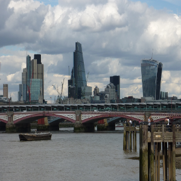

City of London in een Notendop
De City is vaak een vergeten onderdeel in een trip aan Londen. De City niet alleen het finaciele hart van de stad is maar ook van het oude Londen. De square mile is waar de Romeinen Londinium stichten, waar de Saxen woonde en waar nu de bankiers zitten.
In een wandeling van een uur ontmoeten we Romeinen, koningen, koninginnen, gilden, gevangenissen en nog veel meer.

City of London Tour
Deze wandeling duurt twee uur en geeft ons tijd om ook bij de nieuwere gebouwen in de City stil te staan zoals de Gherkin en de Walkie Talkie en wat verder door te lopen tot Summerset Palace en de omgeving waar recht wordt gesproken.

Fiets Tour
In een half uur alle top attracties zien? Dit is je kans! Een veilige route langs alle top attracties en een hoop leuke weetjes en tips. Perfect ook voor oudere kinderen die niet veel willen lopen. Inclusief comfortabele fiets en ook voor een helm en poncho's wordt gezorgd indien gewenst.

kids Tour
Een toer met kinderen waarbij we beginnen en eindigen bij een speeltuin of park. Met Leuke weetjes en veilige routes.